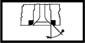
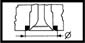

VALVE SEATS
- Path
- Technical Data > Manufacturing data > 10 ENGINE > 1016 CYLINDER HEAD/S > VALVE SEATS
- Kind
- technical data / specifications
- Applies to
- all engines; all production periods
- Interactive page
- https://sloeber94.github.io/elrnDB-aGt/en/#/2921820
Applies to: all engines; all production periods
Angle "b" contact band with valves (-) | Validity |  | ||
|---|---|---|---|---|
90˚ ± 10' | 2.0 JTS | |||
Angle "c" valve seat lower band (-) | Validity | |||
30˚ | 2.0 JTS | |||
Angle"a" valve seat upper band (-) | Validity | |||
150˚ | 2.0 JTS | |||
Contact band angle with inlet valve () | Validity | |||
45˚ ± 20' | 1.9 JTD 16V | |||
Outer diameter (mm) | Validity |  | ||
Exhaust | Inlet | |||
27.491 ÷ 27.512 | 29.489 ÷ 29.514 | 1.9 JTD 16V | ||
Width "L" contact band with valves (mm) | Validity |  | ||
Exhaust | Intake | |||
1.0 | 0.8 | 2.0 JTS | ||
Contact band angle with valves (-) | Validity | |||
|---|---|---|---|---|
90˚ ± 20' | 3.2 V6 | |||